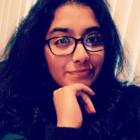
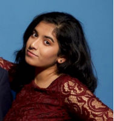
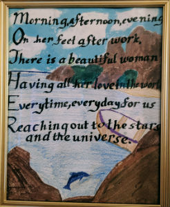
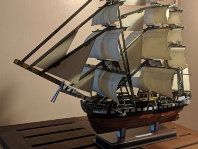

| |
|
|
|
|---|
I am 20 years old and a rising senior at the University of Rhode Island with a major in biotechnology.
I am also on the pre-med track.
For fun I like to build 3-D models and create art. I draw, knit, write calligraphy, paint, basically
making things, kinda like making a website!
|  |  |
|---|
| My mother's day gift to my mom a couple of years back. | My 3-D model of the USS Constitution. (It took me 2 days to put this together) |
|---|---|
|  |  |